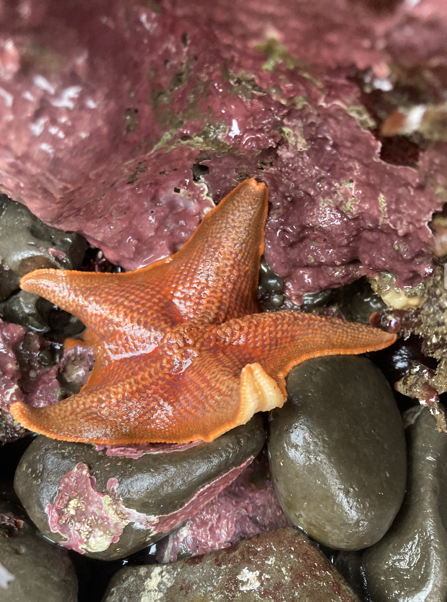
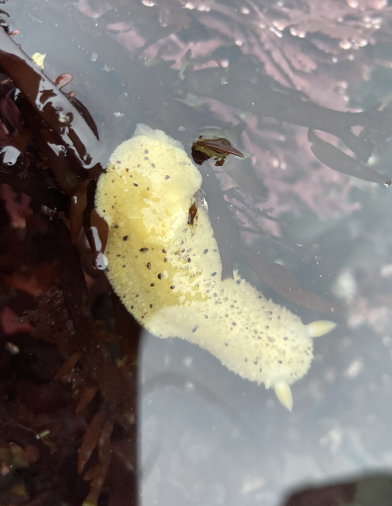
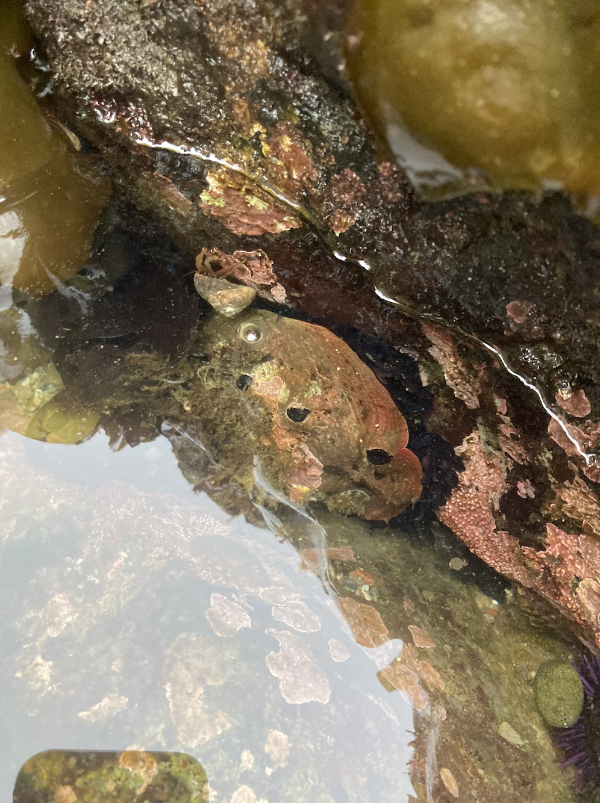

When the tides recede, the creatures living in the coast's rocky crevices are revealed. Scrambling over rocks and kelp, you can glimpse beautiful, slimy, alien-looking life, specially adapted to the turbulent conditions of the intertidal zone.
The lower the tide the more you see so use a tide chart to plan your visit. (It's recommeneded to go tidepooling at tides of 1.5 feet or lower)



Images from left to right.